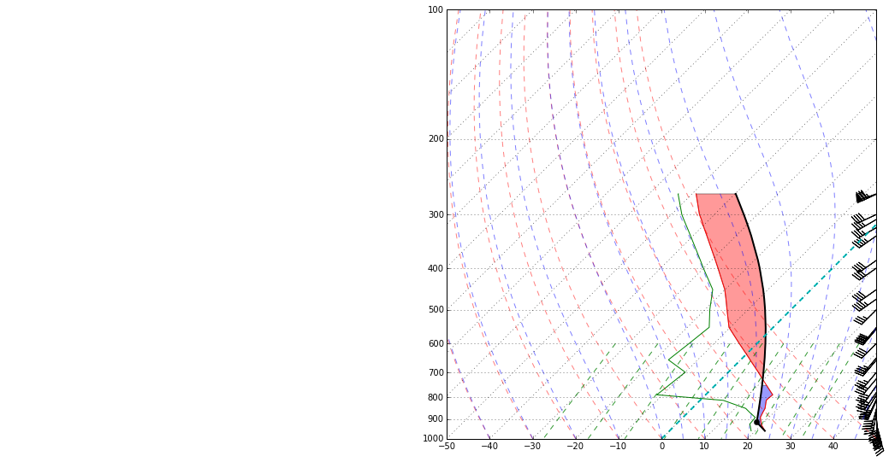
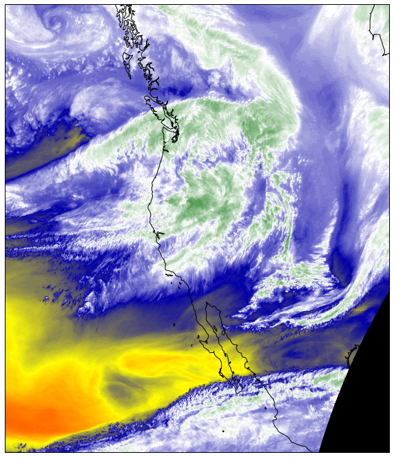
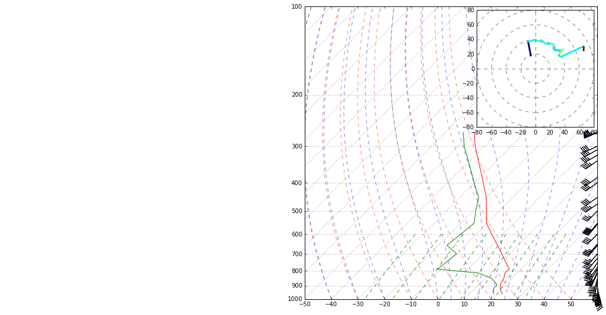
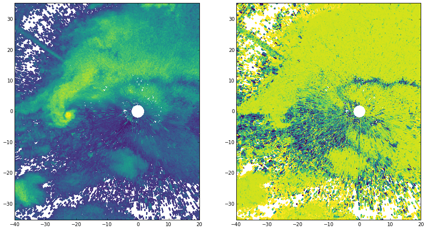
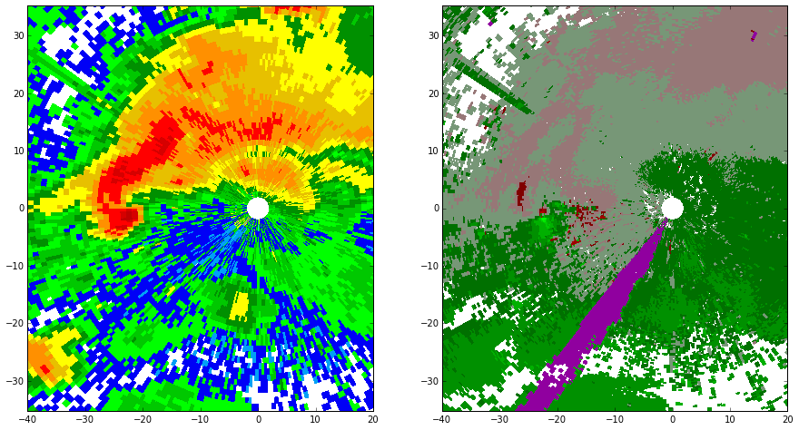
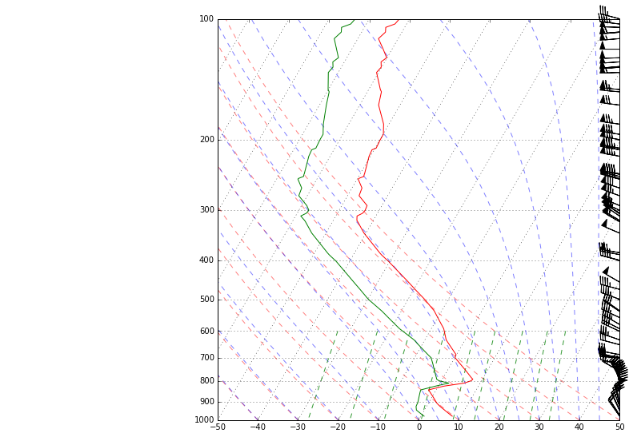
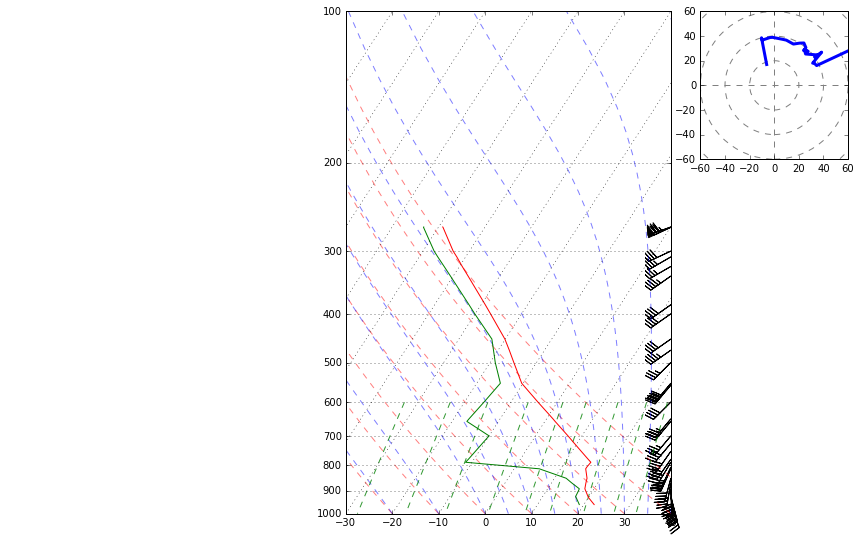
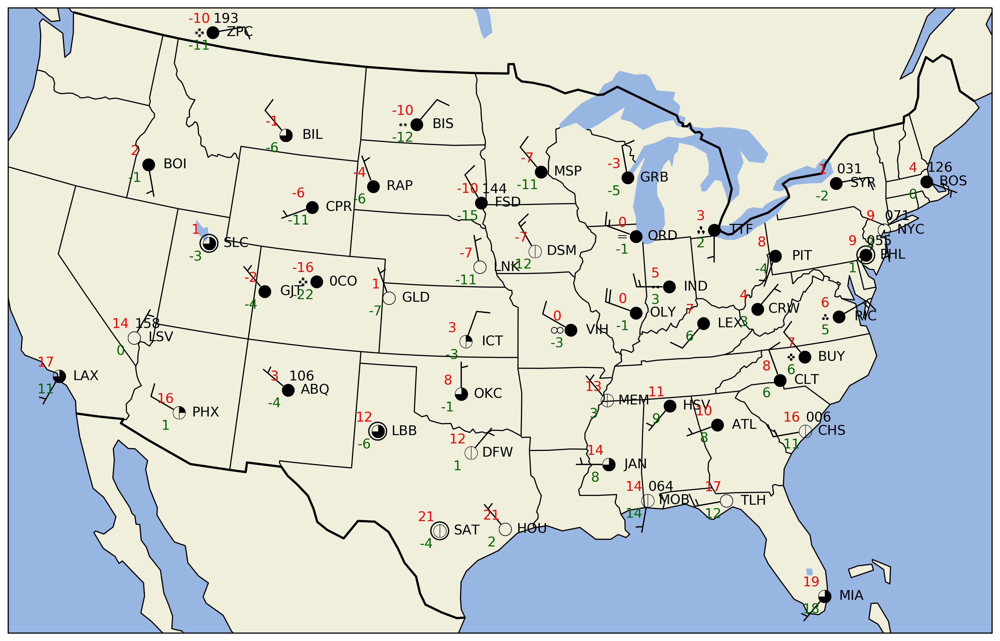
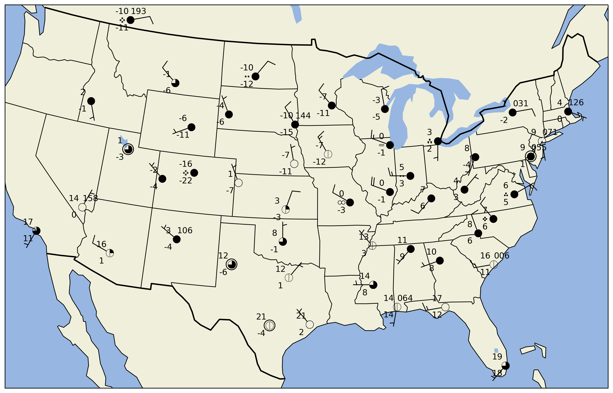

MetPy
0.3.1
Installation Guide
Unit Support
MetPy Examples
Advanced Sounding
Dewpoint and Mixing Ratio
GINI Water Vapor
Hodograph Inset
NEXRAD Level 2 File
NEXRAD Level 3 File
Simple Sounding
Skew-T Layout
Station Plot
Station Plot with Layout
The MetPy API
Developer’s Guide
MetPy
Docs
»
MetPy Examples
View page source
MetPy Examples
¶









Dewpoint and Mixing Ratio